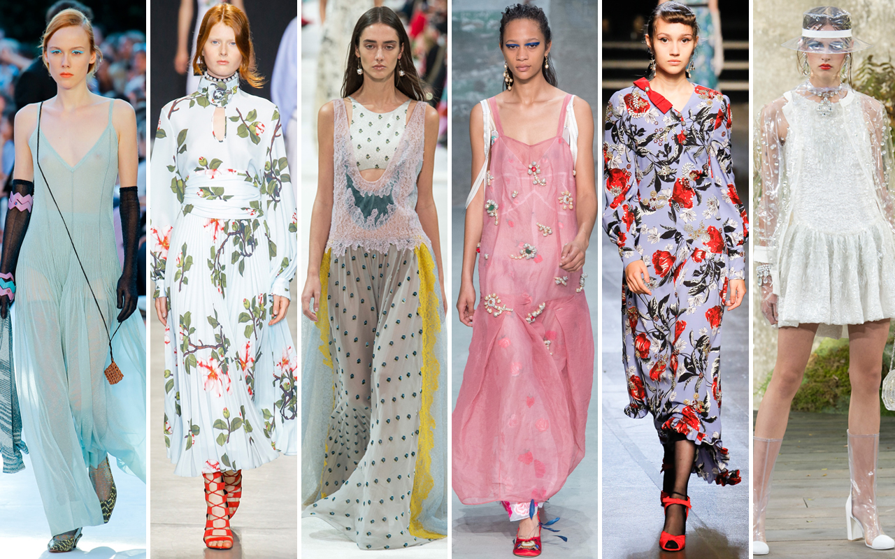

Make-up can be viewed as frivolous, but there are key moments when its power to bring confidence to the wearer should not be underestimated. Here, model and philanthropist Petra Němcová discusses the role of beauty in her own powerful and inspiring story, after her life was changed forever.In the latest episode from Vogue’s video series, in partnership with Max Factor, we meet Petra Němcová, a Czech philanthropist and model and one of the Max Factor Voices – a diverse collective of 11 inspirational women from around the world whose life experiences have shaped their attitudes to beauty. 
Instagram likes are now a serious metric for investors in luxury brands including Burberry, Kering-owned Gucci and Saint Laurent and LVMH labels including Dior and Louis Vuitton. Posts on the millennial-friendly platform are likely to lead to sales, according to a UBS report on European luxury published Friday. "Given the rising importance of social media for luxury brands — especially in the context of millennials growth — we believe Instagram data can no longer be ignored as a data point for luxury investors, to help them pick the winning brands," the report's authors said. The number of Instagram followers a luxury brand has is likely to correlate to sales. "We note a clear linear relation between the number of followers on a given social channel and the brand sales at retail," UBS notes. Even if fans can't afford to buy a designer item immediately, their interest will likely mean they purchase "sooner or later."